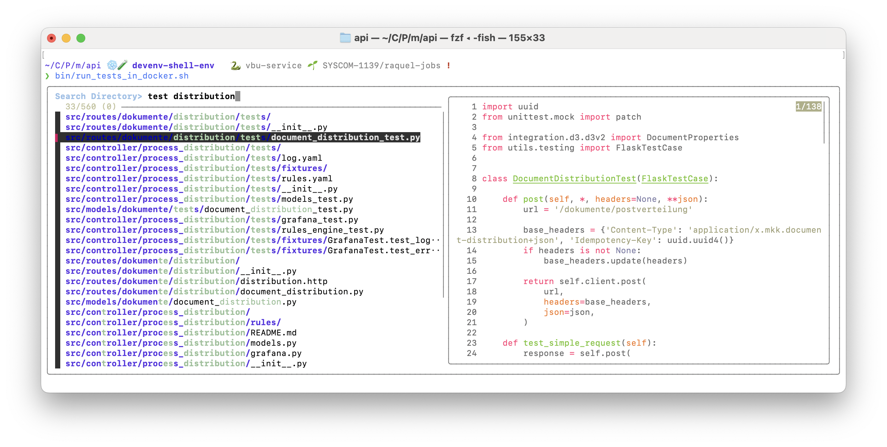

Nachdem es bisher in der Serie um die grundlegende Einrichtung der Shell, einen guten Prompt und funktionierende autoomatische Vervollständigung ging, geht es jetzt eine Weile um Werkzeuge um mit der Shell effizient zu navigieren und Dateien und Inhalte zu finden.
Einleitung
Hier geht es mir darum das die Arbeit auf der Shell (auf dem eigenen Rechner vor allem) nur dann schnell und Effizient ist, wenn man schnel und einfach in die Ordner kommt in denen man arbeiten möchte, und die Dateien findet in denen etwas interessantes steht das man entweder lesen oder verändern möchte.
Und natürlich ist das Skillset auch auf beliebige Server transferierbar, weil man alle diese Werkzeuge (oder deren etwas primitivere Variante, dazu später mehr) auch auf einem Server, oder in einem Docker-Container, gerne auch auf einem Kubernetes-Cluster in Produktion einsetzen kann, wo man sonst halt nicht so viele Werkzeuge hat, und schon gar nicht seine IDE anschließen kann um zu versuchen dort Herr der Lage zu werden.
Dazu möchte ich euch die Tools zoxide, grep/ripgrep, fzf, less/cat/bat und direnv vorstellen.
Diese Tools erleichtern viele täglich oft wiederholte Arbeitsabläufe dramatisch, und sie ermöglichen viele Use-Cases, die viele grafischen IDEs und Text-Editoren gar nicht unterstützen. Los geht es mit dem flauschigsten der Tools, fzf.
Zackig die richtige Datei finden: fzf
fzf frei Eingezangendeutscht "der flauschige Kommandozeilen Finder", ist ein werkzeug um Dateien (aber auch beliebige andere Dinge) anhand von teilen des Namens oder Mustern wie jeder erste Buchstabe der Wörter ihres Namens zu finden. Dazu bietet dieses Werkzeug eine Oberfläche die interaktiv die Liste der Auswahlmöglichkeiten filtert während man tippt. Die meisten IDEs bieten so eine Funktion irgendwo mehr oder weniger gut versteckt an, und dieses Werkzeug portiert diese Funktionalität als generisches Werkzeug in die Shell.
Als beispiel: Ich möchte einen bestimmten UnitTest ausführen:
$ bin/run_tests_in_docker.sh $(fzf)
Mit diesem Kommando, wird zuerst fzf aufgerufen (wegen $(fzf)) was dann eine oberfläche präsentiert, mit der man interktiv die richtige oder die richtigen Dateien auswählen kann.
# ich verwende die fish shell, daher brauch ich das $ nicht ❯ bin/run_tests_in_docker.sh (fzf) src/models/dokumente/tests/document_distribution_test.py src/controller/process_distribution/tests/models_test.py src/models/dokumente/tests/dokumente_test.py src/integration/d3/api/test/models_test.py ▌ src/models/tests/kontaktdaten_test.py 5/448 ──────────────────────────────── > models 'test.py
In dem Interface kann man auch mit den Pfeiltasten navigieren, oder einen Eintrag anklicken. Der von mir eingegebene Suchstring "models 'test.py" bedeutet, dass 'models' irgendwo in dem Treffer diese Buchstaben in dieser Reihenfolge vorkommen müssen, während "'test.py" erzwingt das der exakte String 'test.py' vorkommen muss.
Wenn man die fzf-Integration mit der eigenen Shell aktiviert, kriegt man viele weitere Integrationen in die Shell dazu. Zwei Beispiele:
⌃-Tsucht (mit Vorschau!) nach Dateien unterhalb des aktuellen Verzeichnisses. Das ist immer dann Praktisch wenn man für ein Kommando eine Datei aus dem aktuellen Projekt als Argument übergeben muss, und spart das tippen von$(fzf). Klar, mit Auto-Vervollständigung kommt man auch ans Ziel, aber das ist soo viel schneller. Insbesondere wenn man nicht genau im Kopf hat wo die Datei liegt, aber noch weiß was in Ihrem Namen oder Pfad vorkommen muss. Das verwende ich die ganze Zeit.⌃-Rsucht mitfzfin der Shell-Historie. Das funktioniert viel besser als die Standard-Suche, die nur nach direkt zusammenhängenden Buchstaben suchen kann. Ein Beispiel: Das Wenn ich das Kommandohelm template extensions ./k8s/extensions/ --values ./k8s/extensions/values.dev.yaml | yqaus meiner historie suchen möchte, müsste ich ohnefzfden exakten Text schreiben der in dem Kommando vorkommt.
~ Search History> helmtemplateexten 76/32637 (0) 02-17 18:07:03 │ helm template extensions ./k8s/extensions/ --values ./k8s/extensions/values.dev.yaml 02-17 18:06:10 │ helm template extensions ./k8s/extensions/ --values ./k8s/extensions/values.dev.yaml | yq 02-17 17:59:53 │ helm template extensions ./k8s/extensions/ --values ./k8s/extensions/values-dev.yaml 02-17 20:22:18 │ helm template extensions ./k8s/extensions/ --values ./k8s/extensions/values.dev.yaml 02-17 18:15:27 │ helm template --debug extensions ./k8s/extensions/ --values ./k8s/extensions/values.dev.yaml 02-17 17:59:42 │ helm template --dry-run --debug extensions ./k8s/extensions/ --values ./k8s/extensions/values-dev.yaml ▌ 02-17 17:59:29 │ helm template --dry-run --debug ./k8s/extensions/ --values ./k8s/extensions/values-dev.yaml 02-17 17:59:36 │ helm template --dry-run --debug foo ./k8s/extensions/ --values ./k8s/extensions/values-dev.yaml ╭──────────────────────────────────────────────────────────────────────────────────────────────╮ │ helm template --dry-run --debug ./k8s/extensions/ --values ./k8s/extensions/values-dev.yaml │ ╰──────────────────────────────────────────────────────────────────────────────────────────────╯
Wenn ich oft, wenn ich ein neues Terminal öffne in die gleichen Projekte navigiere, dann geht das prima über die Shell-History:
❯ # ctrl-r für history suche Search History> cdmkkapi 352/32638 (0) ────────────────────────── 08-12 11:56:19 │ cd mkk/api 08-24 19:05:13 │ cd ../mkk/api ▌ 05-26 08:39:19 │ cd Code/Projekte/mkk/api 07-29 17:02:48 │ cd Code/Projekte/mkk/api_infra/ 02-15 08:37:01 │ cd Code/Projekte/mkk/api_infra/monitoring/ ╭──────────────────────────╮ │ cd Code/Projekte/mkk/api │ ╰──────────────────────────╯
Mit Zoxide geht das noch besser, aber dazu später mehr.
So habe ich meine fzf Integration konfiguriert:
# configure key-bindings for fzf-fish # ctrl-f directory search # ctrl-r history search # ctlr-v variables search # ctrl-l git log search # ctrl-s git status search # ctrl-p processes pid search fzf_configure_bindings --git_log=\f --directory=\cF --git_status=\cS --processes=\cP
Das geniale an fzf ist, dass es sich so wunderbar in andere Tools integrieren lässt. Hat man es installiert wird es z.B. von KubeCTX verwendet um in kubectx die liste der verbundenen Kubernetes Cluster zu filtern. Oder von kubens um die Liste der Namespaces. Tatsächlich verwenden viele Werkzeuge intern fzf wenn es instaliert ist. Für mich immer wieder eine schöne Überrachung, wenn ein weiteres Werkzeug das ich gerne einsetze fzf verwendet.